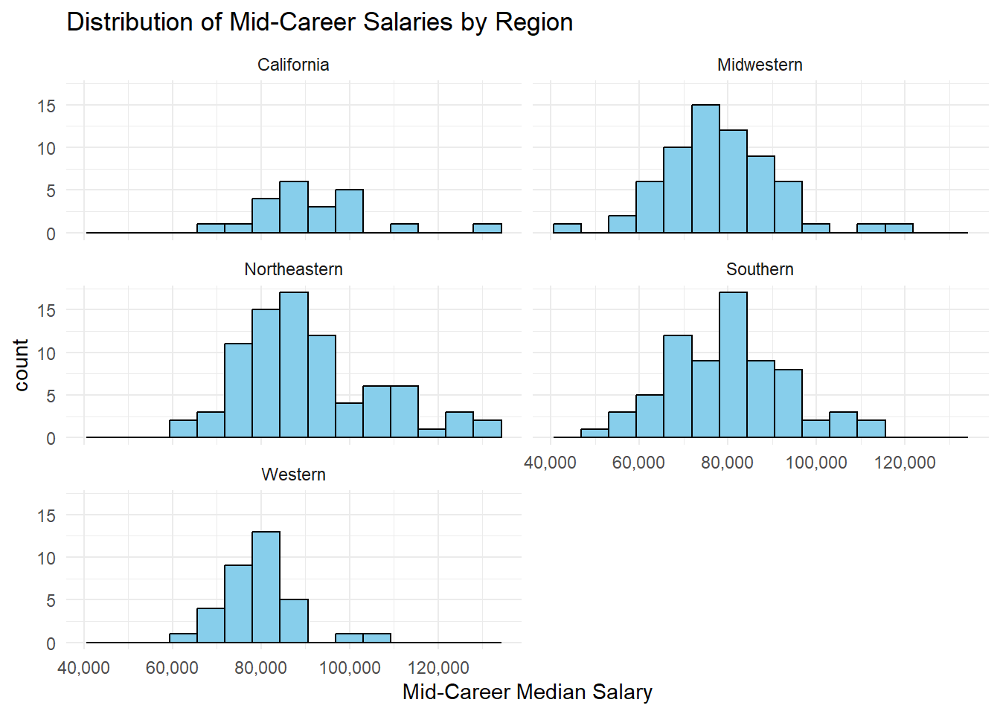
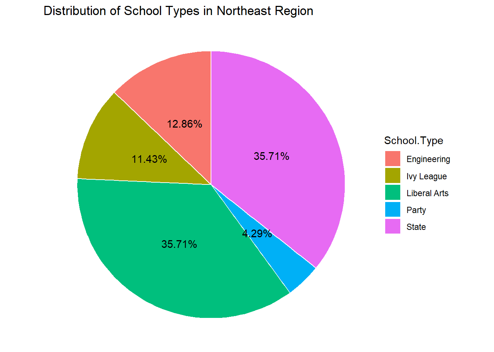
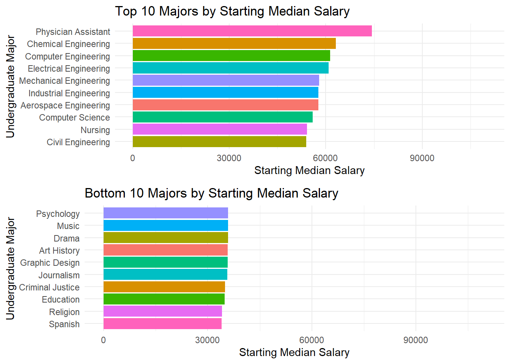
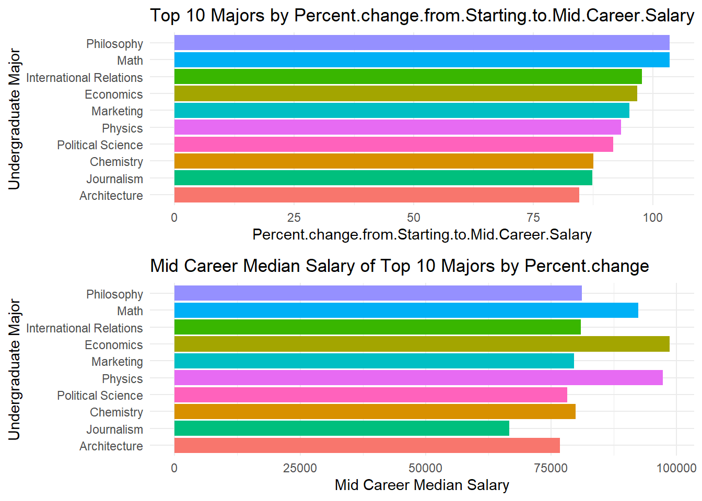
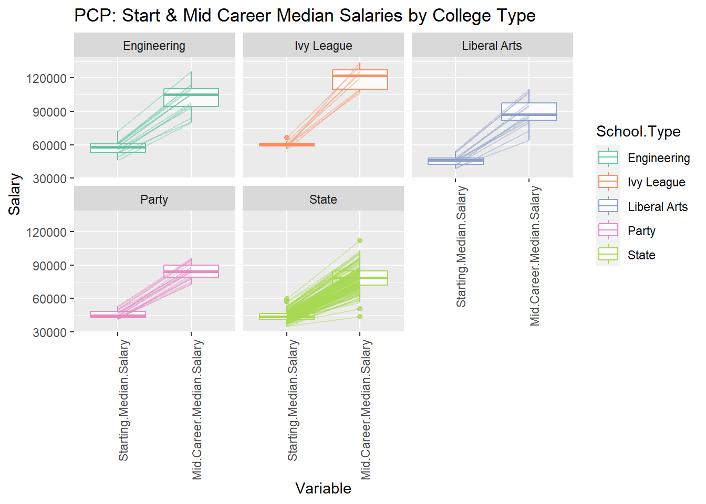

Code
degrees <- read.csv("data//cleaned_data//degrees-that-pay-back-cleaned.csv")
salaries_col <- read.csv("data//cleaned_data//salaries-by-college-type-cleaned.csv")
salaries_reg <- read.csv("data//cleaned_data//salaries-by-region-cleaned.csv")Welcome to a journey through the diverse landscape of colleges, majors, and career trajectories. In this data-driven exploration, we aim to uncover patterns, disparities, and intriguing insights that shape the post-graduation landscape.
degrees <- read.csv("data//cleaned_data//degrees-that-pay-back-cleaned.csv")
salaries_col <- read.csv("data//cleaned_data//salaries-by-college-type-cleaned.csv")
salaries_reg <- read.csv("data//cleaned_data//salaries-by-region-cleaned.csv")The first brushstroke on our canvas reveals a varied tapestry of colleges. Regions and college types each contribute their unique hues, creating a rich mosaic of educational institutions.
library(ggpubr)
# DISTRIBUTION BY SCHOOL TYPE
school_counts <- table(salaries_col$School.Type)
# Creating a data frame from the counts
count_df <- data.frame(School.Type = names(school_counts), Count = as.numeric(school_counts))
# Creating a bar chart
p1 <- ggplot(count_df, aes(x = reorder(School.Type, -Count), y = Count)) +
geom_bar(stat = "identity", fill = "skyblue", color = "black") +
labs(title = "Number of Colleges by School Type",
x = "School Type",
y = "Number of Colleges") +
theme_minimal() +
theme(axis.text.x = element_text(angle = 30, hjust = 1))
# DISTRIBUTION BY REGION
region_counts <- table(salaries_reg$Region)
# Creating a data frame from the counts
count_df <- data.frame(Region = names(region_counts), Count = as.numeric(region_counts))
# Creating a bar chart
p2 <- ggplot(count_df, aes(x = reorder(Region, -Count), y = Count)) +
geom_bar(stat = "identity", fill = "skyblue", color = "black") +
labs(title = "Number of Colleges by Region",
x = "Region",
y = "Number of Colleges") +
theme_minimal() + theme(axis.text.x = element_text(angle = 30, hjust = 1))
# Plotting the two graphs
ggarrange(p1, p2, ncol = 2)Most of the colleges in our data set belong to the ‘State’ category and majority of the colleges are located in the Northeast region of USA. California, although a state and not a region, has a very large number of colleges and hence has been assigned its own category.
As we dive deeper, we discover that the financial contours of a career post-college are not uniform. Mid-career salaries vary significantly across regions and college types, unveiling economic landscapes shaped by education.
library(scales)
salaries_reg %>%
ggplot(aes(x = `Mid.Career.Median.Salary`)) +
facet_wrap(~`Region`, ncol = 2) +
geom_histogram(bins = 15, fill = "skyblue", color = "black") +
labs(
title = "Distribution of Mid-Career Salaries by Region",
x = "Mid-Career Median Salary"
) +
theme(axis.text.x = element_text(angle = 30, hjust = 1)) +
scale_x_continuous(labels = label_comma()) +
theme_minimal()
# Creating overlaid density histograms
ggplot(salaries_reg, aes(x = Mid.Career.Median.Salary, fill = Region)) +
geom_density(alpha = 0.4) +
labs(title = "Distribution of Mid-Career Salaries by Region",
x = "Mid-Career Median Salary",
y = "Density") +
scale_color_brewer(palette = "Set2") + scale_y_continuous(labels = scales::comma_format())
Looking at the mid career salaries of graduates from various schools, it is clearly visible that salaries of grads from schools located in the Midwest, West, and South never cross the 110k mark. But there are grads from schools in the Northeast and in California who have received salaries upwards of 110k, a few years into their field.
The peaks of the density curves of the various regions also show the most common salary range for schools in each region.
library(tidyverse)
library(scales)
salaries_col %>%
ggplot(aes(x = `Mid.Career.Median.Salary`)) +
facet_wrap(~`School.Type`, scales = "free_y", ncol = 2) +
geom_histogram(bins = 15, fill = "skyblue", color = "black") +
labs(
title = "Distribution of Mid-Career Salaries by School Type",
x = "Mid-Career Median Salary"
) +
theme(axis.text.x = element_text(angle = 30, hjust = 1)) +
scale_x_continuous(labels = label_comma()) +
theme_minimal()
# Creating overlaid density histograms
ggplot(salaries_col, aes(x = Mid.Career.Median.Salary, fill = School.Type)) +
geom_density(alpha = 0.4) +
labs(title = "Distribution of Mid-Career Salaries by School Type",
x = "Mid-Career Median Salary",
y = "Density") +
scale_color_brewer(palette = "Set3") + scale_y_continuous(labels = scales::comma_format())Graduates from Ivy league schools have the highest salaries a few years into their careers (mid career), as can be seen clearly from the plot above. The lower limit of their mid career salary range itself is 110k which is the upper limit for grads from State and Liberal Arts schools.
Party school grads seem to have the lowest mid career salaries among the available school types, with an upper limit of 100k.
A few engineering schools had grads with mid career salaries upwards of 110k, but still not as high as the ones from Ivy leagues.
The overlaid density curves make it easier to visualize and conclude the above points.
We will now look at the top 10 schools based on the mid career median salary. Intuitively, they should be in the Northeast or California region and belong to the Ivy League or Engineering type. Let’s look into it.
library(ggplot2)
library(dplyr)
library(scales)
library(kableExtra)
salaries_col_raw <- read.csv("data//raw_data//salaries-by-college-type.csv")
salaries_reg_raw <- read.csv("data//raw_data//salaries-by-region.csv")
salaries_col_raw$Mid.Career.Median.Salary <- as.numeric(gsub("[$,]", "", salaries_col_raw$Mid.Career.Median.Salary))
salaries_reg_raw$Mid.Career.Median.Salary <- as.numeric(gsub("[$,]", "", salaries_reg_raw$Mid.Career.Median.Salary))
salaries_col_raw <- salaries_col_raw[order(salaries_col_raw$Mid.Career.Median.Salary, decreasing = TRUE), ]
# Get the top 10 rows
salaries_reg_raw <- salaries_reg_raw[order(salaries_reg_raw$Mid.Career.Median.Salary, decreasing = TRUE), ]
# Get the top 10 rows
top_10_schools_reg<- salaries_reg_raw[1:10, ]
school_counts <- top_10_schools_reg %>%
group_by(Region) %>%
summarise(Num_Schools = n())
print(top_10_schools_reg$School.Name) [1] "Dartmouth College"
[2] "Princeton University"
[3] "Stanford University"
[4] "Massachusetts Institute of Technology (MIT)"
[5] "Yale University"
[6] "Harvard University"
[7] "California Institute of Technology (CIT)"
[8] "Harvey Mudd College"
[9] "University of Pennsylvania"
[10] "University of Notre Dame" # Display the result
#pie(school_counts$Num_Schools, labels = school_counts$Region, main = 'Distribution of #Schools by Region', col = rainbow(length(school_counts$Region)))
school_counts$percentage <- school_counts$Num_Schools / sum(school_counts$Num_Schools)*100
school_counts$percentage <- sprintf("%d%%", school_counts$percentage)
# Create a pie chart with percentage labels
ggplot(school_counts, aes(x = "", y = Num_Schools, fill = Region)) +
geom_bar(stat = "identity", width = 1, color = "white") +
coord_polar(theta = "y") +
geom_text(aes(label = percentage), position = position_stack(vjust = 0.5)) +
ggtitle("Distribution of Top 10 Schools by Region") +
theme_void()+
theme(axis.text.x = element_blank(), axis.title.x = element_blank())
Evidently, 9 out of the top 10 colleges are in the Northeast and California regions, hence backing our intuition.
Majority of the colleges are in the Northeastern region. Let us try and find some distinct features of the colleges and their salaries in this region compared to the other regions.
#merge dataframes
library(ggpubr)
northeastern = subset(salaries_reg_raw,Region=="Northeastern")
merged_df <- left_join(northeastern, salaries_col_raw, by = "School.Name")
final_df = na.omit(merged_df, cols = c("School.Type"))
#in north east region salary distribution by college type
school_counts <- final_df %>%
group_by(School.Type) %>%
summarise(Num_Schools = n())
# Display the result
#pie(school_counts$Num_Schools, labels = school_counts$Region, main = 'Distribution of #Schools by Region', col = rainbow(length(school_counts$Region)))
school_counts$percentage <- school_counts$Num_Schools / sum(school_counts$Num_Schools)*100
school_counts$percentage <- round(school_counts$percentage,2)
school_counts$percentage <- format(school_counts$percentage, trim = TRUE)
#school_counts$percentage <- as.numeric(as.character(school_counts$percentage))
#school_counts$percentage = sprintf("%.2f", school_counts$percentage)
school_counts$percentage <- sprintf("%s%%", school_counts$percentage)
# Create a pie chart with percentage labels
ggplot(school_counts, aes(x = "", y = Num_Schools, fill = School.Type)) +
geom_bar(stat = "identity", width = 1, color = "white") +
coord_polar(theta = "y") +
geom_text(aes(label = percentage), position = position_stack(vjust = 0.5)) +
ggtitle("Distribution of School Types in Northeast Region") +
theme_void()+
theme(axis.text.x = element_blank(), axis.title.x = element_blank())
plot1 = ggplot(final_df, aes(x = Mid.Career.Median.Salary.x, fill = School.Type)) +
geom_density(alpha = 0.4) +
labs(title = "Distribution of Mid-Career Salaries by School Type in Northeast",
x = "Mid-Career Median Salary",
y = "Density") + xlim(25000,150000)+
scale_color_brewer(palette = "Set3") + scale_y_continuous(labels = scales::comma_format())
others = subset(salaries_reg_raw,Region!="Northeastern")
merged_df <- left_join(others, salaries_col_raw, by = "School.Name")
final_df = na.omit(merged_df, cols = c("School.Type","Mid.Career.Median.Salary.x"))
plot2 = ggplot(final_df, aes(x = Mid.Career.Median.Salary.x, fill = School.Type)) +
geom_density(alpha = 0.4) +
labs(title = "Distribution of Mid-Career Salaries in regions other than Northeast",
x = "Mid-Career Median Salary",
y = "Density") + xlim(25000,150000)+
scale_color_brewer(palette = "Set3") + scale_y_continuous(labels = scales::comma_format())
ggarrange(plot1,plot2,nrow=2)As we can clearly see, the Ivy Leagues group is present only in the Northeast Region’s density curve which leads us to the conclusion that all the Ivy leagues are in the North East region of USA. And since Ivy leagues are among the colleges with highest median salaries, we can relate it to the result of Northeastern region having a higher salary range.
Our exploration of majors provides a surprising revelation. The top 10 majors with the highest starting salaries and mid-career salaries might not be what you expect. Could your passion align with a lucrative career?
# | warnings = FALSE
library(tidyverse)
library(ggpubr)
majors = degrees
plot1 <- majors %>%
arrange(desc(`Starting.Median.Salary`)) %>%
top_n(10, wt = `Starting.Median.Salary`) %>%
mutate(Rank = row_number()) %>%
ggplot(aes(fill = Undergraduate.Major, y = reorder(Undergraduate.Major, Starting.Median.Salary), x = `Starting.Median.Salary`)) +
geom_col() + xlim(0, 110000) +
labs(title = "Top 10 Majors by Starting Median Salary", x = "Starting Median Salary", y = "Undergraduate Major") +
theme_minimal() + guides(fill = FALSE)
plot2 <- majors %>%
arrange(`Starting.Median.Salary`) %>%
top_n(-10, wt = `Starting.Median.Salary`) %>%
mutate(Rank = row_number()) %>%
ggplot(aes(fill = Undergraduate.Major, x = `Starting.Median.Salary`, y = reorder(Undergraduate.Major, Starting.Median.Salary))) +
geom_col() + xlim(0, 110000) +
labs(title = "Bottom 10 Majors by Starting Median Salary", x = "Starting Median Salary", y = "Undergraduate Major") +
theme_minimal() + guides(fill = FALSE)
ggarrange(plot1, plot2, nrow = 2)
8 out of the top 10 majors by Starting Median Salaries are from the Engineering or related (CS) category. This result is consistent from the conclusion from the above distribution graphs, where we saw engineering majors having higher salary ranges. The other two majors are related to the medical field.
Looking at the bottom 10 majors, there is very little variation among starting salaries of grads from these majors. For comparison, we note that the bottom 3 are Education, Religion, and Spanish.
# | warnings = FALSE
library(tidyverse)
library(ggpubr)
majors = degrees
plot1 <- majors %>%
arrange(desc(`Mid.Career.Median.Salary`)) %>%
top_n(10, wt = `Mid.Career.Median.Salary`) %>%
mutate(Rank = row_number()) %>%
ggplot(aes(fill = Undergraduate.Major, y = reorder(Undergraduate.Major, Mid.Career.Median.Salary), x = `Mid.Career.Median.Salary`)) +
geom_col() + xlim(0, 110000) +
labs(title = "Top 10 Majors by Mid Career Median Salary", x = "Mid Career Median Salary", y = "Undergraduate Major") +
theme_minimal() + guides(fill = FALSE)
plot2 <- majors %>%
arrange(`Mid.Career.Median.Salary`) %>%
top_n(-10, wt = `Mid.Career.Median.Salary`) %>%
mutate(Rank = row_number()) %>%
ggplot(aes(fill = Undergraduate.Major, x = `Mid.Career.Median.Salary`, y = reorder(Undergraduate.Major, Mid.Career.Median.Salary))) +
geom_col() + xlim(0, 110000) +
labs(title = "Bottom 10 Majors by Mid Career Median Salary", x = "Mid Career Median Salary", y = "Undergraduate Major") +
theme_minimal() + guides(fill = FALSE)
ggarrange(plot1, plot2, nrow = 2)
There is, however, some major shuffling in the ranking as we move from comparing Starting Salaries to Mid Career Salaries. Now, 7 out of the initial 8 engineering majors have retained their place in the top 10 but Civil Engineering has dropped in ranking. Both the medical majors have also dropped and Math, Physics and Economics, all related to the ‘Sciences’ have entered the top 10.
For the bottom 10 majors, the last 3 majors (Education, Religion, Spanish) have retained their place (with some shuffling among themselves.) Criminal Justice, Music, and Drama are still in the bottom 10 and there are 4 new entries.
Each of the bottom 10 majors’ grads still had a salary less than 60k after working for a few years, while the 10 10 majors’ grads had a salary higher than 60k even at the start of their career.
library(tidyverse)
library(ggpubr)
majors = degrees
plot3 <- majors %>%
arrange(desc(`Percent.change.from.Starting.to.Mid.Career.Salary`)) %>%
top_n(10, wt = `Percent.change.from.Starting.to.Mid.Career.Salary`) %>%
mutate(Rank = row_number()) %>%
ggplot(aes(fill = Undergraduate.Major, y = reorder(Undergraduate.Major, Percent.change.from.Starting.to.Mid.Career.Salary), x = `Percent.change.from.Starting.to.Mid.Career.Salary`)) +
geom_col() +
labs(title = "Top 10 Majors by Percent.change.from.Starting.to.Mid.Career.Salary", x = "Percent.change.from.Starting.to.Mid.Career.Salary", y = "Undergraduate Major") +
theme_minimal() + guides(fill = FALSE)
plot4 <- majors %>%
arrange(desc(`Percent.change.from.Starting.to.Mid.Career.Salary`)) %>%
top_n(10, wt = `Percent.change.from.Starting.to.Mid.Career.Salary`) %>%
mutate(Rank = row_number()) %>%
ggplot(aes(fill = Undergraduate.Major, y = reorder(Undergraduate.Major, Percent.change.from.Starting.to.Mid.Career.Salary), x = `Mid.Career.Median.Salary`)) +
geom_col() +
labs(title = "Mid Career Median Salary of Top 10 Majors by Percent.change", x = "Mid Career Median Salary", y = "Undergraduate Major") +
theme_minimal() + guides(fill = FALSE)
ggarrange(plot3, plot4, nrow = 2)
From the two adjacent plots above, it is evident that the major that saw the maximum percent increase in the median salary was not the one with the highest mid career median salary. Knowing this is important because, there are many instance where we see headlines like “Philosophy majors saw a 104 percent increment in five years after graduating from college” (an example.) A large portion of the audience is not familiar with how numbers can be manipulated and presented to spread a certain opinion. And students deciding majors for college are among them too (majority.) This can be misleading and hence it becomes important to understand that percents and actual numbers can reveal different insights and one should be careful when reading headlines which present facts using percents.
In this intricate tapestry, the parallel coordinate plot unveils the relationships between various salary metrics and school names. Each line represents a school, and the colors tell a story of school types.
library(GGally)
salaries_col$School.Type <- as.factor(salaries_col$School.Type)
salaries_col$School.Name <- as.factor(salaries_col$School.Name)
ggparcoord(
salaries_col,
columns = c(3, 4),
groupColumn = "School.Type",
scale = "globalminmax",
alphaLines = 0.4,
splineFactor = FALSE,
boxplot = TRUE,
# order = c(3, 5, 6, 4, 7, 8)
) + theme(axis.text.x = element_text(angle = 90, hjust = 1)) +
scale_color_brewer(palette = "Set2") + facet_wrap(~ School.Type, ncol = 3) +
labs(title = "PCP: Start & Mid Career Median Salaries by College Type", x = "Variable", y = "Salary")
Key observations from the plot:
Starting salaries: Engineering graduates have the highest starting median salaries across all regions, followed by Ivy League graduates. Liberal Arts and Party schools have lower starting salaries.
Salary increase: Graduates from all college types experience an increase in median salary from starting to mid-career. Ivy League graduates have the highest percentage increase (99%), followed by Party schools (85%) and Engineering schools (76%). Liberal Arts graduates have a slightly lower increase (74%).
Engineering majors have the highest median starting salary at $80,000, followed by Ivy League graduates at $75,000, and liberal arts graduates at $60,000.
Engineering majors also have the highest median mid-career salary at $150,000, followed by Ivy League graduates at $130,000, and liberal arts graduates at $100,000.
The median mid-career salary for all six school types is higher than the median starting salary. This suggests that, on average, workers can expect their earnings to increase over time.
library(GGally)
salaries_col$School.Type <- as.factor(salaries_col$School.Type)
salaries_col$School.Name <- as.factor(salaries_col$School.Name)
ggparcoord(
salaries_col,
columns = 4:8,
groupColumn = "School.Type",
scale = "globalminmax",
alphaLines = 0.4,
splineFactor = FALSE,
order = c(5, 6, 4, 7, 8)
) + theme(axis.text.x = element_text(angle = 90, hjust = 1)) +
scale_color_brewer(palette = "Set2") + facet_wrap(~ School.Type) + scale_y_continuous(labels = scales::comma_format()) +
labs(title = "Distribution of Mid Career Median Salaries by College Type", x = "Variable", y = "Salary")
We have the 10th, 25th, 50th, 75th, and 90th percentiles of the median mid career salaries for each school in each college type category above. The Parallel Coordinate plots faceted by college type show the range of these values and if there are outliers for each variable.
For instance, the largest difference between 90th percentile and 10th percentile mid career median salary is for Ivy Leagues. A few party and state schools have a higher 90th percentile value compared to others in their category. These results are similar to analyzing a box plot, only here we are given the values of the percentiles and not the continuous data to determine them.
Changing the lens, the parallel coordinate plot re-imagines our narrative. The colors now represent different regions, uncovering geographic nuances in career trajectories.
salaries_reg$Region <- as.factor(salaries_reg$Region)
salaries_reg$School.Name <- as.factor(salaries_reg$School.Name)
ggparcoord(
salaries_reg,
columns = c(3, 4),
groupColumn = "Region",
scale = "globalminmax",
alphaLines = 0.2,
splineFactor = FALSE,
showPoints = TRUE,
boxplot = TRUE,
# order = c(3, 5, 6, 4, 7, 8)
) + theme(axis.text.x = element_text(angle = 90, hjust = 1)) +
scale_color_brewer(palette = "Set2") + facet_wrap(~ Region, ncol = 3)+
labs(title = "PCP: Start & Mid Career Median Salaries by Region", x = "Variable", y = "Salary")The graph compares the starting and median salaries for different career stages across five regions in the United States: California, Midwestern, Northeastern, Southern, and Western.
California boasts the highest median salaries for both starting and mid-career stages, with $75,000 for starting and $130,000 for mid-career.
The Northeastern region follows closely, with medians of $70,000 and $120,000 for starting and mid-career, respectively.
Salaries for all regions tend to be higher in the mid-career stage compared to the starting stage, indicating potential for career growth within each region.
The Southern and Western regions have the lowest median salaries for both starting and mid-career stages, with medians around $60,000 and $100,000, respectively.
The Midwestern region occupies the middle ground, with median salaries around $65,000 for starting and $110,000 for mid-career.
ggparcoord(
salaries_reg,
columns = 4:8,
groupColumn = "Region",
scale = "globalminmax",
alphaLines = 0.2,
splineFactor = FALSE,
showPoints = FALSE,
boxplot = FALSE,
order = c(5, 6, 4, 7, 8)
) + theme(axis.text.x = element_text(angle = 90, hjust = 1)) +
scale_color_brewer(palette = "Set2") + facet_wrap(~ Region, ncol = 3) + scale_y_continuous(labels = scales::comma_format()) + labs(title = "Distribution of Mid Career Median Salaries by Region", x = "Variable", y = "Salary")Similar to the PCP faceted by college type, this one is faceted by region. Each region seems to have some outliers in the 75th and 90th percentile variable columns. Mid career salaries of Northeastern colleges have the highest range and that of Western colleges has the lowest.